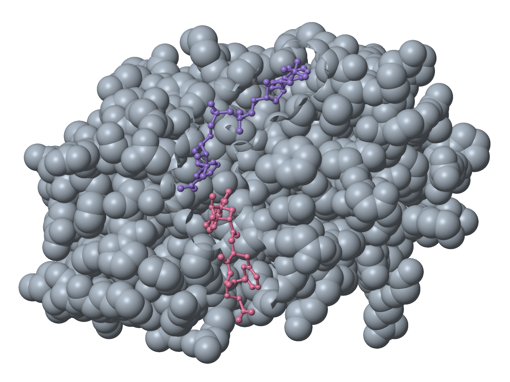

Design, Synthesis, and Computational Evaluation of Peptide-Based Inhibitors Targeting Dihydrofolate Reductase in Cancer
Dihydrofolate reductase (DHFR) helps cells maintain the folates needed to make DNA.

Human DHFR GS model
The live model could not load. This is the GS source image.
Alexander WongIn collaboration with Dr. Phelan
Loading the verified source model.
How DHFR works
Dihydrofolate reductase, or DHFR, helps recycle the folates used to make the building blocks of DNA.
Human DHFR
DHF + NADPH + H⁺ → THF + NADP⁺
Scroll to follow the chemistry, or choose a step.
The molecular comparison
What changes when the base changes?
Guanosine (GS) and isoguanosine (isog) share the same Phe-Glu peptide. Their amino and oxo groups exchange positions on the base.
Choose a part below. Enable touch controls to rotate or select atoms.
The live structure could not load. The GS source image and research text remain available.
Download the GS modelThese prepared poses guide the next comparisons. Their appearance does not establish binding strength or enzyme inhibition.
The research
What has been prepared, what remains unresolved, and how the next experiments answer different questions.